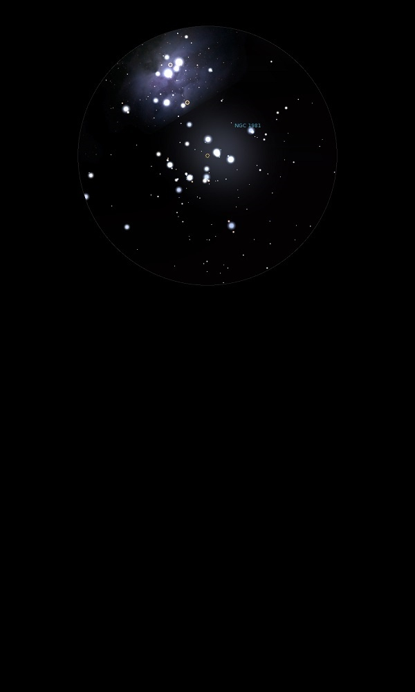

NGC 1981
Open Cluster with Nebulosity in
Orion
NGC 1981
Mag 4.6
11/01/14
Open Cluster. Fills the FOV in 12mm neatly with eight stars of
Mags 6 to 8 and a few fainter stars
Shaped like a flying swan below NGC 1977
08/12/15
A very bright Open Cluster which fits neatly into the FOV in
12mm, with the nebulosity from NGC 1973 just peeping in from the
North
10/02/16
A really bright Open Cluster with few stars between it's
brighter members around 6th and 7th magnitude
The three brightest are HIP 26257 at Mag 6.40, HIP 26234 at Mag
6.45 and VO Ori, HIP 26233 at Mag 6.55, all in a nice line and
of similar colours
One rogue star, just in the FOVin 12mm, is V1045 Ori, HIP 26182
at Mag 6.70, but it looks to be part of the cluster
06/03/24
Through 20x80 binoculars eight stars form the cluster, all
around the same magnitude and rather like a tiny Orion lying on
its left side with V1046 Ori, HIP 26234 and HIP 26257, all
around Mag 6.5 forming the belt